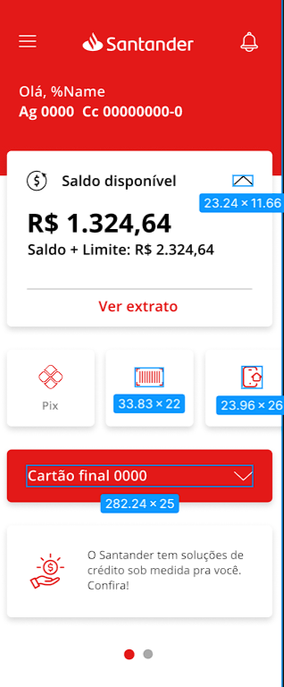

Santander API RESTFUL.
Java RESTful API criada para a Santander Dev Week.
Principais Tecnologias:
Java 17+
Utilizei a versão LTS mais recente do Java para tirar vantagem das últimas inovações que essa linguagem robusta e amplamente utilizada oferece;Spring Boot 3
Trabalhei com a mais nova versão do Spring Boot, que maximiza a produtividade do desenvolvedor por meio de sua poderosa premissa de autoconfiguração;Spring Data Jpa
Sssa ferramenta pode simplificar nossa camada de acesso aos dados, facilitando a integração com bancos de dados SQL;Open Api (Swagger)
Criei uma documentação de API eficaz e fácil de entender usando a OpenAPI (Swagger), perfeitamente alinhada com a alta produtividade que o Spring Boot oferece;

Acesse o meu repositorio no GitHub para mais detalhes e para visualizar o diagrama do projeto.